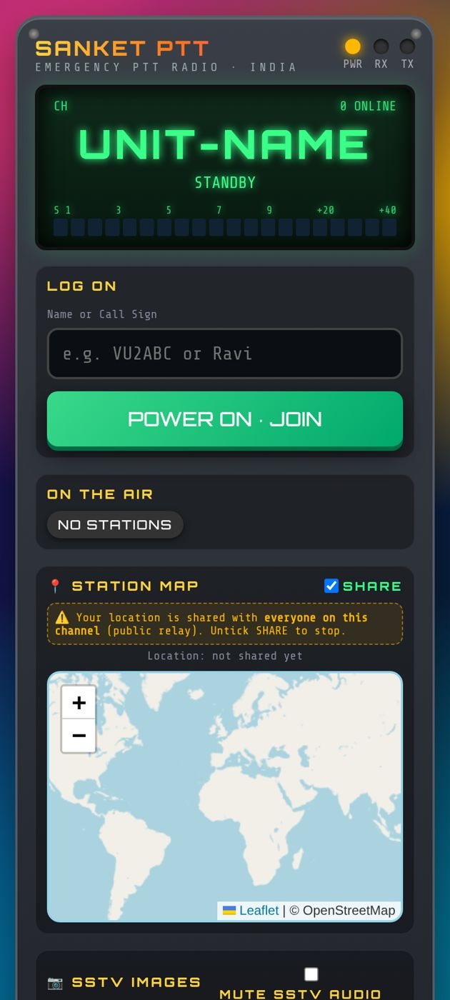
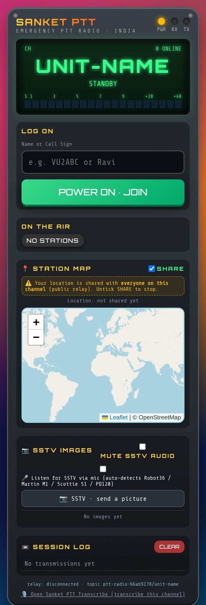

Sanket PTT — User Guide
Push-to-talk voice radio for police and emergency departments · Android app and web
Web app: https://vibhvesh.github.io/sanketptt/
Android app (APK): https://github.com/vibhvesh/sanketptt/releases/download/v1.0-android/Sanket_PTT.apk
Pilot / demonstration service. Do not send sensitive information.
1. What it does
- Hold-to-talk voice on named channels, one speaker at a time.
- See who is on the air, with optional location sharing on a map.
- Replay recent transmissions from the session log.
- Send and receive pictures over SSTV (Robot36, Martin M1, Scottie S1, PD120).

2. Install
Android
- Open the APK link above in the phone's browser.
- When the download finishes, tap the file to open it.
- If asked, allow Install unknown apps for the browser, then tap Install.
- If Play Protect warns, choose Install anyway, then tap Open.
- Allow Microphone, Location and Notifications when asked.
Web: open the web link in Chrome and add it to the home screen. No installation needed.
3. Join a channel
- Open the channel link from your supervisor, for example
https://vibhvesh.github.io/sanketptt/?ch=unit-name. The channel is the part after ?ch=. Do not use the default public channel for official work.
- Enter your allotted name or call sign.
- Tap POWER ON · JOIN. If shown, tap TAP TO ENABLE AUDIO.
- Check that your call sign appears under ON THE AIR.
4. Talk
- Listen first and make sure nobody else is speaking.
- Press and hold the PTT button, wait about one second, then speak.
- Release the button when you finish so others can reply.
- Missed something? Play it back from the Session log.

5. Share location
- Tick SHARE in Station map only when instructed.
- Everyone on the channel can see shared locations.
- Untick SHARE when it is no longer needed.
6. Pictures (SSTV)
Send
- Announce on the channel and wait for acknowledgement.
- Tap SSTV · send a picture and choose the picture.
- Pick a mode: Robot36 (~37 s, fastest), Martin M1, Scottie S1 or PD120.
- Tap SEND IMAGE and wait. The channel is busy while sending (tap ✕ to cancel).
Receive: stay joined. Pictures decode automatically and appear under SSTV images; download them as PNG. Tick Listen for SSTV via mic to decode a nearby handset, or MUTE SSTV AUDIO to silence the tones.
7. Always on (Android)
- The screen stays on while the app is open; a "staying on while locked" notification keeps it running when locked.
- Keep the phone on charge for long shifts.
- Set the app's battery mode to Unrestricted (Settings → Apps → Sanket PTT → Battery).
- The app loads the live site, so updates arrive automatically. Close and reopen to refresh.
8. Troubleshooting
| Problem |
Fix |
| No sound |
Tap TAP TO ENABLE AUDIO; raise phone volume. |
| Cannot talk |
Allow the microphone permission; wait until the channel is free. |
| Not in ON THE AIR |
Check internet, then tap POWER ON · JOIN again. |
| App stops when locked |
Set battery to Unrestricted; keep the notification on. |
| Wrong channel |
Reopen the exact link from your supervisor (?ch=). |
9. Support
Akshat Singh · akshatsingh@canberravision.com